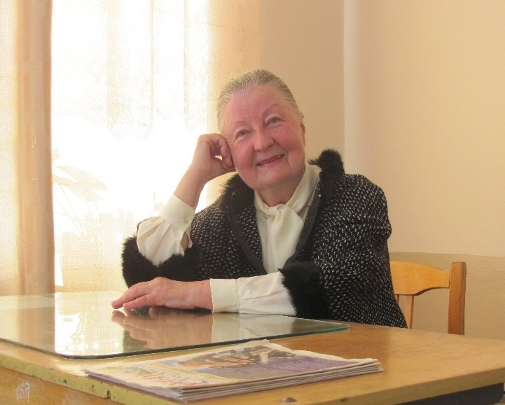
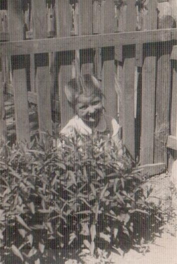
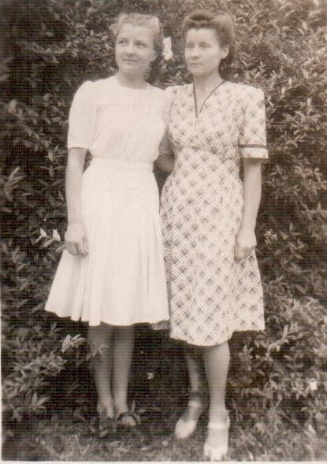

Полесса Кристина Чеславовна
🏡 1. Семья и довоенное детство
Единственная дочь в семье. Отец, Полесса Чеслав Болеславович, слесарь фанерного завода, погиб в 1939 г. на польско-германском фронте. Мама — Валентина Игнатьевна. Семья католического вероисповедания.
⚡ 2. Начало войны и оккупация родного края
Жили на Фабричной улице (микрорайон Рудня). В ноябре 1942 г. чудом избежали гибели при угрозе сожжения поселка.
⛓️ 3. Облава, арест и отправка в эшелонах
В 1944 г. при отступлении немцев автоматчики оцепили барак. Всю семью (дедушку, бабушку, тетю, маму и 6-летнюю Кристину) в скотских вагонах увезли в Фленсбург на границу с Данией.
🌾 4. Рабский труд, испытания и лагеря Германии
Лагерный барак, нары, колючая проволока. Дети пролезали под проволокой на шоссе. Мама и тетя убирали туалеты на железной дороге в 5 км от барака. За зеленую брюкву грозил расстрел. Семья немецких детей по соседству тайком подарила девочке фартук и сфотографировала на память.
🕊️ 5. Освобождение союзными и советскими войсками
Освобождены американцами. Попали в польский город Пшасныш при советской летной части, где дедушка работал истопником. В 1946 г. семья вернулась в Бобруйск, затем в Микашевичи.
🌱 6. Возвращение на пепелище и мирный труд
Кристина выучила русский язык, пела в хоре. Окончила Гомельское музыкальное училище и Ленинградский институт культуры им. Н.К. Крупской по специальности «хоровое дирижирование». 39 лет преподавала хоровые дисциплины в Гродненском музпедучилище, награждена медалью «Ветеран труда». Сыновья — Виталий (врач) и Владислав (педагог, художник).
📷 Фотографии и архивные документы (3)
Фото 20. Полесса К.Ч. , 2013 год, средняя школа №2

Фото 21. 16.05.1946 год, Польша, г.Пшасныш

Фото 22. Кристина Чеславовна с подругой, после окончания 7 класса